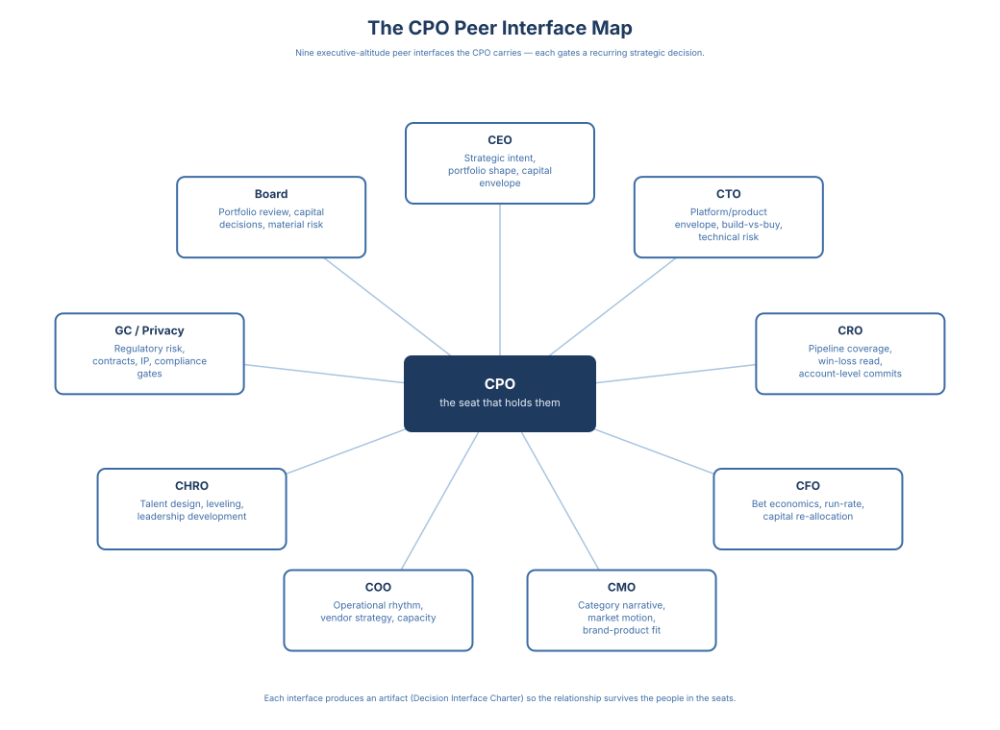

Vision to Value · 9 / 16
Chapter 7: The Executive Altitude

Where the product organization meets the rest of the business.
At the executive altitude, custodianship becomes visible. The CPO seat is where it gets named, owned, and made legible to peers who do not run the product organization but who reach into its decisions every week. The interfaces in this chapter are how the seat holds custodianship in front of the CEO, the CFO, the GC, the board -- not by elaborating other functions, but by holding the integrity of the value loop where the company can see it. This chapter is the operating manual for that work.
Everything so far assumes the product organization is the surface being drawn on. That is half the picture. A product organization sits inside a company whose CEO, board, CFO, GC, COO, and functional peers reach into the product decision system through interfaces with the same anatomy as those inside the organization but that almost nobody designs. The result is the failure every CPO describes: the product system works right up to the moment it meets the rest of the executive layer, then breaks on contact. This chapter is the design work for those surfaces.
The interfaces in this chapter are the highest-altitude instances of a peer discipline a product leader runs at every altitude. Directors run it with their Director peers; VPs run it with VP peers; CPOs run it with C-suite peers. The specific counterparties change by altitude; the Charter discipline does not. Explicitly: this chapter is written at Tier 1. The nine interfaces are the interfaces of the CPO seat against the C-suite and the board, at the altitude where portfolio shape and category commitment live. The same interface anatomy operates at Tier 2 and Tier 3, but the counterparties, the cadences, and the re-decision triggers shift with the altitude.
A note on voice. Some interfaces in this chapter are written from the counterparty's seat, in the counterparty's voice; others stay in the CPO-vantage voice the preceding chapters use. The choice is deliberate: archetype sections (CTO, CRO, CMO, Chief People Officer) carry more signal when the reader hears the counterparty's own logic, while the interfaces where the CPO's move is the load-bearing one (CEO, CFO, Board, COO, GC) read more cleanly from the CPO's seat.
The Moment the Interface Became the Work
I was VP Product at a global enterprise software company, one year into a major program to replace a platform our customers had been using for years. It was the most important product initiative the portfolio was carrying. A new generation of the product, a new cloud foundation, a migration path for a customer base that had built their operations on the thing we were replacing. A year of engineering, a year of customer promises, a year of roadmap commitments written against it.
The CEO had never been fully convinced that the cloud infrastructure direction we had chosen was aligned with his evolving vision. He had signed off early, but the conviction had softened across the year, and nobody on my side had taken the signal seriously enough to re-open the conversation. The interface between the CEO and the product program was a quarterly update, not a living decision surface. The continuation threshold had never been written down. The re-decision trigger had never been defined. And so the conviction decayed privately, on his side of the table, while the program continued to commit capital on mine.
It surfaced in a single meeting. The CEO opened the program review, named the misalignment he had been carrying for months, and shut the program down. He was opinionated and he was aggressive, and in that room, in front of his peers and mine, my GM took the full force of it. I sat quietly. I had the technical argument. I knew that even if the direction shifted to a different cloud technology, the engineering work we had done was mostly portable and the architectural choices were mostly sound. I did not raise it. I let my GM absorb the beating for a decision the three of us had made together a year earlier.
The cost of that silence is what I carry from the moment. My GM sat in a chair he did not need to sit in, for a decision I could have defended, because the interface to the CEO had not been designed for the moment it was most needed. A year later, when we restarted the program against the CEO's approved vision, the codebase had been neglected long enough that most of the portable work was no longer portable. We started again, from scratch, and paid for the interface we had not built by paying for the codebase twice.
This is not a story about a CEO being wrong. It is a story about the moment I understood that the interface to the CEO was not a quarterly update, it was a living channel for conviction to re-enter the decision system before it became a meeting, and the work of designing that channel was mine.
CEO - CPO
Every sitting CPO inherits a CEO, not a job description. The CEO is the one node the CPO cannot charter into existence or re-architect mid-tenure. What the CPO can design is the interface, and the interface is only as good as the honesty about which CEO is on the other side.
Three CEO archetypes break CPO tenure if left un-managed. The product-native CEO has run product before and wants a decision system. The risk is elaboration re-entry because the muscle is familiar. The function-native CEO treats product as a function to manage, wants a head of PM rather than a CPO, and reads the decision system as overhead until it proves itself. The risk is the CPO runs out of patience before the system compounds trust. The outcome-native CEO cares only about portfolio outcomes and wants a CPO who runs quietly and shows up with a number. The risk is under-investing in the internal system because only the external one gets measured.
What the CPO brings to the CEO on a cadence is four things: portfolio state against the capital envelope, bet state against continuation thresholds, decision-system state against health signals, and organizational state against commitments made. What the CPO does not bring is elaboration (scope, pricing, ownership re-assignments). That line is the interface's load-bearing wall.
Inside this interface: strategic direction of the portfolio against the company's plan, tenure-defining organizational bets that require CEO air cover, and re-signing the charter when a trigger fires. Outside: scope decisions on committed bets (Product Leadership Team (PLT)), pricing (CPO-CFO), hiring below the executive team (operating committee). When Outside decisions reach this forum, either side pushes them back, out loud.
Cadence is monthly CEO-CPO sync plus quarterly charter re-signing, with a mid-cycle check-in whenever an input crosses a re-decision trigger. The record is a CEO-CPO Charter, maintained by Product Operations and auditable by the General Counsel. The hygiene rule applies: a charter that cannot be reconstructed in thirty seconds by someone not in the room is not a charter.
Three re-decision triggers: outcome-evidence (portfolio-wide metric miss against externally committed guardrails), market-evidence (category-motion signal reshaping the portfolio), and counterparty-specific (CEO elaboration re-entry across two consecutive cycles). A CEO who re-enters elaboration is absorbing the CPO's authority back into their own office; the trigger makes the absorption structural, not cultural. Exit: CEO change, fundamental restructure, or scale inflection.
The CPO who writes the charter in the first thirty days buys themselves eighteen months of tenure. The CPO who waits for the CEO to write it waits forever.
CEO-CPO interface. The Emotional Cost. The first time I had to tell a CEO that a customer dinner they had been to was not a commitment we had made — the dinner where they had promised the customer's CFO we would ship a specific integration by Q3, and the slide that landed in next month's all-hands deck listed that integration as a Q3 commitment — I learned what the CEO interface actually costs. The engineering work was eight months, not three. The CEO did not push back. The CEO did not unsay it for two weeks either. In that gap I held the integration roadmap honest while sales kept getting asked about the Q3 date. Two weeks later the CEO walked it back at the next all-hands as a phased Q3-to-Q1 rollout. What held was not my no — it was that the charter had a place for named-customer commitments with a two-week revisit, so the unsaying was a small move instead of a reversal.
CPO - CTO
This section is written from the CTO's seat.
Every sitting CPO inherits a CTO, not an engineering department. My operating layer is closest to the CPO's own and our decision surfaces overlap the most, which is what makes this interface fail silently when it fails.
The founder CTO built the stack and carries the technical narrative across the company. The risk is elaboration re-enters Product through technical-strategy debates I frame as architecture calls. The platform CTO runs engineering as a platform portfolio and wants Product as a peer on build-vs-buy and sequencing. The risk is platform and product investment compete for the same capital without a joint review. The infra CTO owns reliability, security, and platform operations and treats Product as a platform consumer. The risk is technical debt surfaces as a budget request rather than an input to continuation-threshold math.
What the CPO brings me is five inputs: technical strategy against portfolio sequencing, platform investment against the capital envelope, the infra-vs-product trade on any bet that touches the platform, quality-ownership at the engineering-productivity-vs-product-reliability seam, and build-vs-buy-vs-OSS posture where the question is live. What the CPO does not bring is roadmap elaboration or team-level engineering decisions, and what the CPO does not absorb is architecture-review authority over committed bets. A CTO who accepts roadmap elaboration absorbs scope back into engineering; a CPO who absorbs architecture review reproduces the Chapter 3 failure mode at executive altitude.
Inside: platform-investment sequencing and build-buy-OSS calls on platform components, architecture-review gates on committed bets, quality-ownership at the product-engineering seam. Outside: product scope, pricing, team-level engineering decisions. Cadence: monthly platform review plus quarterly architecture review, synchronized to the enterprise reliability calendar; a mid-cycle check-in fires on reliability or velocity breach against a committed bet.
CPO-CTO interface. Record: CTO-CPO platform charter, maintained by Product Operations. The General Counsel reads it for what the platform has committed to license, what it depends on that is not ours, and where the IP exposure lives. Triggers: outcome-evidence (reliability or velocity breach on a committed bet), market-evidence (tech-stack category shift — cloud pricing, foundation-model pricing, platform-vendor shift), counterparty-specific (architecture-review gate missed). Exit: CTO role change or platform strategy pivot.
CPO-CTO interface. The Emotional Cost. The first time an architecture-review gate slowed a bet I had already committed to, I had to choose between overriding the CTO in front of the engineering managers in the room or accepting that the peer relationship was a hard constraint on my own speed. I accepted it. The bet shipped a quarter later than I would have shipped it alone, and the customer-evidence loop confirmed the gate was right. A year later, when a build-buy-OSS call came up, the CTO and I made it together in a single conversation — because the gate from the year before had taught both of us what peer meant. That is the work of the interface.
CPO - CRO
This section is written from the CRO's seat.
Every sitting CPO inherits a CRO, not a sales organization. My quota meets the product's roadmap every week, and my deal-level decisions reshape the roadmap faster than any other executive interface.
The enterprise CRO runs large deals through long cycles and carries roadmap commitments into deals as a matter of course. The risk is customer promises exceed the roadmap's window, and Product inherits deal-originated scope through the back door. The PLG CRO runs product-led motion and treats Sales as amplification of product signals. The risk is the enterprise layer gets under-built. The channel CRO runs partner-mediated revenue and reaches into Product through partnership-architecture decisions. The risk is partner-mediated GTM decisions drift into Product without the joint CRO-Business Development-Product forum Principle 5 names.
What the CPO brings me is seven inputs: forecast against committed roadmap, pipeline shape against the portfolio's expected-value model, discount trend against the CFO's margin floor, motion mix across enterprise/PLG/channel, enablement readiness against each committed launch, competitive-loss count on named bets (quantitative from Business Operations, qualitative from Competitive Intelligence (CI)), and, distinct from those six, customer promises made in deals as a first-class input: committed roadmap items, SLAs, integrations, timelines. Without this input class named, deal commitments drift into roadmap through side channels. What the CPO does not bring is the pricing floor, which stays with the CFO; my interface surfaces exception patterns, it does not revise the floor.
Inside: GTM motion mix against the portfolio, enablement sequencing against launch windows, commercial exception patterns that need structural response. Outside: pricing floor (CFO), product scope (PLT). Cadence: weekly forecast, monthly motion review, quarterly joint portfolio review with CRO, CPO, and CFO; mid-cycle check-in on forecast miss or competitive-loss pattern against a named bet.
CPO-CRO interface. Record: CRO-CPO commercial charter, maintained by Product Operations, auditable by the CFO's team for pipeline and forecast integrity. Partner-mediated revenue enters through the Principle 5 negotiated-economics surface (revenue share, margin split, co-sell credit, MDF, partner-tier economics), read into this interface through the Business Development-owned paragraph. Triggers: outcome-evidence (forecast miss against commit), market-evidence (competitive-loss pattern on a named bet), counterparty-specific (customer promise exceeding the roadmap's T+6 or T+12 window). Exit: CRO role change or material GTM pivot.
CPO-CRO interface. The Emotional Cost. The first time I refused a customer promise that would have closed a named deal — in a QBR where the deal had a logo and the alternative was a sentence about roadmap windows — I learned what the commercial charter actually costs. The deal did not close that quarter. The CRO and I both took the hit; I took it on credibility with the room, they took it on the quota. Two quarters later, the roadmap shipped the version of the capability that did close the deal. The customer-promise register held because both of us paid in the same quarter — and the charter is what made the cost visible in real time, not in a postmortem.
CPO - CFO
The CFO's operating calendar is mathematically incompatible with the product calendar, and the reconciliation is where most CPOs quietly lose credibility. Product runs weekly-operating, monthly-portfolio, quarterly-outcome. Finance runs monthly-close, quarterly-variance, annual-planning, with reforecast events when bets move enough to matter. Portfolio decisions that don't land in the same window as company-level commits ship into an empty calendar; the bet is re-decided and the capital allocation does not move, which means the re-decision was not real.
Three commitments hold the interface. First, continuation thresholds read in monthly close: when a bet breaches, the CFO hears about it in the month it breaches, not the quarter of review. Second, portfolio decisions translate to forecast revision in the same cycle: a stop-continue-renew call is simultaneously a learning signal and a forecast-revision event. Outcome review without forecast handoff is learning that never becomes a plan change. Third, pricing decisions land on the margin floor as a signed input, not an interpretation. Principle 5 names pricing as a shared decision right with Product accountable for intent and Finance accountable for the floor; the interface is where that gets exercised, with the margin floor entering as a hard constraint. The CPO who installs these buys the CFO's trust as a peer; the one who does not runs product inside a financial system that treats it as an unplanned expense.
CPO - Board
Chapter 3 establishes that the board is a decision interface with the same anatomy as every other interface. What's missing is the artifact: the version of the Decision Interface Charter that governs the quarterly portfolio-review surface where the CPO meets the board with the CEO.
I call it the Board Bet Review Charter, the highest-leverage artifact a CPO installs after the Decision Interface Charter in Appendix B. It is not the quarterly product review (PLT-internal) and it is not the board deck (a communication artifact owned with the CEO). It is the forum where the portfolio is reviewed against outcome evidence, continuation thresholds are honored or breached on the record, and stop-continue-renew calls are made with capital-allocation consequences attached. Without it, every board cycle reopens strategy from scratch; with it, the board cycle becomes portfolio accounting.
CPO-Board interface. The Emotional Cost. The first time I had to defend a bet at executive management altitude whose continuation threshold I had personally signed — in a room where two of the five CxOs had stopped nodding the way they had the first time the bet was committed — I learned that the board interface is where the VP Product’s judgment becomes annually visible to people whose job is to second-guess it. The bet held. So did the threshold. Two of the CxOs asked the harder questions in the meeting; one of them asked the same question a year later, when the bet came up again. The re-decision discipline held because I signed the threshold and they had it in writing. That is what the board charter is for — it is not theater, and it is not advisory.
CPO - COO
The COO's operating layer most nearly mirrors the CPO's own, which is what makes the seam invisible until it fails. Chapter 5 draws the line at the product perimeter: Product Operations runs the product operating layer, Business Operations delivers the business sensor, the operating calendar sequences product rituals. The COO sees the same layer stretched across the whole company (S&OP, quarterly operating reviews, executive commits, cross-functional program management), and the two layers either synchronize or produce duplicated governance.
The design is reconciliation, not merger. The product calendar synchronizes to the company-wide one at three points: monthly portfolio review in the same week as monthly operating review, quarterly outcome review in the same cycle as quarterly business review, annual planning inputs reach the COO's process in time to shape the company-wide plan. The Product Operations boundary is load-bearing: Product Operations owns product-decision-system machinery (cadence, charter hygiene, record findability, trigger instrumentation); enterprise program management owns cross-functional program execution across Product, Sales, Finance, Legal, IT. The two don't overlap; naming the boundary prevents two partially-overlapping meeting stacks run by two leaders each believing they own the mandate. The Business Operations boundary is the third: Business Operations is the product organization's business sensor, not enterprise FP&A. Where Business Operations and Finance meet is where the continuation-threshold conversation happens. A clean COO interface compounds operating credibility in every quarterly review; a murky one loses the operating review as a forum for product decisions within the first year.
CPO - CMO
This section is written from the CMO's seat.
Every sitting CPO inherits a CMO, not a marketing department, and the CPO is the executive whose category authority most often gets absorbed into the brand function when I let it. The three CMOs the CPO is likely to meet are not interchangeable.
The category-creator CMO treats positioning as strategic and wants Product in the room when the category story is written. The risk is my category commits land faster than the portfolio can anchor them. The demand-gen CMO runs marketing as a pipeline machine and treats positioning as a message test. The risk is PMM reports to me as campaign copywriting, turning positioning into whatever converts this quarter. The brand CMO owns corporate narrative at enterprise altitude. The risk is product positioning drifts downstream of the brand calendar and loses buyer specificity.
What the CPO brings me is five inputs: brand-calendar against launch sequencing (Product Operations), demand-gen commitments against T+2/T+6 evidence windows (Business Operations), corporate-narrative inputs the portfolio must match (PLT), PMM reporting-line clarity and shared success criteria on marketing-dominant bets (Director of Product Marketing), and CI-fired competitive positioning moves. What the CPO does not bring is product positioning or pricing as negotiable. A CMO who re-enters positioning elaboration absorbs the CPO's category authority into the brand function, and once absorbed it is almost never returned.
Inside: brand-calendar synchronization against launch windows, PMM reporting-line arrangement, shared success criteria on marketing-dominant bets. Outside: product roadmap and pricing (informational only). Cadence: monthly brand-product sync plus quarterly positioning review; a mid-cycle check-in fires on any CI category-motion signal or brand-calendar conflict with a committed launch.
CPO-CMO interface. Record: CMO-CPO marketing charter, maintained by Product Operations, auditable by the CFO's team for demand-gen commit integrity. Triggers: outcome-evidence (demand-gen commit miss on a named bet), market-evidence (competitor positioning against the category), counterparty-specific (brand-calendar conflict with a committed launch). Exit: CMO role change or marketing restructure.
CPO - Chief People Officer
This section is written from the Chief People Officer's seat. Many enterprises still carry the Chief Human Resources Officer (CHRO) title; the book uses Chief People Officer throughout as the modern equivalent, and the two should be read interchangeably wherever a reader's organization retains the older naming.
Every sitting CPO inherits a Chief People Officer, not a staffing function, and the interface only works if both sides are awake to the same discipline. From my seat, the CPO inherits a calibration peer whose job is to ensure the product organization's leveling, comp bands, succession, and cohort retention are built with the rigor the portfolio gets. My choice is whether I treat the surface as an HR review with a Product attendee or as a joint decision system with an HR counterparty in the room.
Three Chief People Officer archetypes break the interface if left unmanaged. The builder treats people as architecture and arrives with opinions on PM leveling, comp-band symmetry, and succession. The risk is I move faster than Product's career framework can absorb. The scaler runs the enterprise people layer and sees Product as one function that must conform to the company-wide grid. The risk is I flatten PM leveling into a grid built for functions whose work does not look like Product's. The admin runs HR as service provider and meets the CPO around requisitions and policy. The risk is the CPO carries talent design alone, producing decisions the comp committee quietly reverses the year the market turns.
What the CPO brings me is five inputs: spans and layer-count across the product organization, PM-to-product-engineering ratios against portfolio shape, comp-band integrity mapped to the enterprise grid, succession and bench depth at PM-Director and VP-Product, and attrition signals by cohort against our written retention floors. What the CPO does not bring is leveling, compensation, or succession surfaced as HR artifacts after the decision is functionally made. That line is my wall as much as the CPO's: a Chief People Officer who accepts Product's talent calls as artifacts has already absorbed the decision into HR administration.
The interface decides three classes Inside, refuses three Outside. Inside: PM leveling calibration against the career framework, comp-band integrity mapped to the enterprise grid, PM-role succession and bench-depth at Director-and-above. Outside: product scope, pricing, and roadmap sequencing, which drift into talent conversations whenever a leveling disagreement surfaces as a headcount request or a retention case arrives as a promotion exception. When an Outside decision reaches the forum, either of us pushes it back to the PLT, out loud, so the pattern does not repeat.
Cadence is monthly talent review plus quarterly calibration forum. Monthly handles attrition-spike signals, active backfills, and cohort retention reads; quarterly runs leveling calibration with every PM-Director named and every Director-tier promotion defended on the record. A mid-cycle check-in fires when a cohort breaches its retention floor. I treat that as structural, not cultural, because cultural framings are how attrition becomes a "climate issue" instead of a leveling gap. A calibration that does not translate to a pay change in the same cycle did not happen.
The record is a Chief-People-Officer-CPO talent charter, maintained by Product Operations and auditable by me for leveling and comp integrity. Three re-decision triggers: outcome-evidence (attrition spike in a named cohort above its floor), market-evidence (competitive hiring against named roles with named comp patterns), counterparty-specific (leveling calibration drift across two consecutive forums). Exit: Chief People Officer role change or material restructure.
CPO - GC
The scaffolding the book has built (Decision Records, Charters, re-decision triggers, state persistence) looks to a General Counsel like a paper trail the company can stand behind. The GC reading it can see who looked at what, when they looked, what they changed, and who signed the change. That is what the GC actually wants when a regulator opens an inquiry, when the board asks how a continuation call was made, or when a shareholder complaint lands. Not a performance. The record of the work.
What the General Counsel wants is three extensions. First, regulatory-acceptance gates inside success criteria for any bet whose completion depends on a regulator (medical devices, financial services under DORA, AI systems under the EU AI Act). Definition of done is not shipping; it is regulatory acceptance. Second, IP and licensing as a required input class: patent exposure, third-party OSS obligations, trademark scope, data-license provenance. A Charter that doesn't carry them produces diligence artifacts only by accident. Third, privacy as a metric-integrity constraint: every Principle 6 integrity choice (definition, window, owner, source of truth, exclusions) is a processing decision under GDPR, CCPA, LGPD. The Charter's metric entries must name the lawful basis, retention boundary, and jurisdictional constraint. The CPO who installs these can answer a regulator's question, a board's question, or a litigator's question with the record itself, not with a story about the record. The one who does not has a decision system that works inside the company and does not survive the first time someone outside it asks how a call was made.
CPO-GC interface. The Emotional Cost. The first time the GC told me an integration we had committed to ship next quarter was not yet defensible — the licensing on one of its third-party components had not been cleaned up enough to stand up in a customer audit, and the CRO had already written three enterprise renewal contracts that priced in the integration at the launch-quarter rate — I learned that the GC interface is where the VP Product holds a position the math has already made for them. I did not have to argue against the CRO. The bet had already failed the licensing threshold, and the GC and I held the same line because the threshold was the line. The integration shipped one quarter late with cleaned licensing. The three contracts closed at the next-quarter rate anyway. The charter held because the math had done the holding — the GC and I just had to read it out loud in the right room.
The Board Bet Review Charter
The Board Bet Review Charter is the Decision Interface Charter from Appendix B, specialized for the quarterly portfolio-review surface between the product organization, the CEO, and the board. It is owned by the CPO, signed with the CEO, cadenced against the board calendar. The field set below is the template.
Decision type: Portfolio-level stop / continue / renew on strategic bets; capital commitments above a named threshold; executive compensation linkage to portfolio outcomes; M&A consequent to portfolio sequencing.
Accountable owner: The CEO owns the decision; the CPO owns the evidence, the artifact, and the forum mechanics. Dual accountability, single decision - named explicitly so the interface does not collapse into the deck.
Forum and cadence: Quarterly, aligned to the board calendar, with a mid-quarter check-in on any bet whose continuation threshold is within one reporting cycle of breach.
Record location: A persistent, findable, linkable artifact maintained by Product Operations. The CFO's team reads it to confirm that capital allocation against committed bets matches the portfolio reality. The General Counsel reads it to reconstruct, when asked, how a continuation call was made and who made it.
Required inputs:
- Portfolio state (CPO, from the PLT's monthly portfolio review): bets against continuation thresholds, outcome evidence at T+2, T+6, T+12, re-decision triggers currently armed.
- Financial-operating state (CFO): realized-versus-projected value creation on closed bets, unit-economics trajectory on active bets, capital envelope against commitments, forecast-revision implications.
- Market state (CI lead): competitive moves that have fired a market-evidence trigger, category-motion read, substitutes entering the segment.
- Commercial-operating state (Business Operations): P&L posture, booking-data view, commitments that have and have not reached pipeline.
- Commitment state (Product Operations): calendar adherence on triggers armed last quarter, decision-record findability, commitment-drift modes detected.
- Peer state as material: Legal (regulatory-acceptance gate status), CRO (GTM readiness), CS / Value Realization (adoption-depth evidence at T+6 or T+12).
Decision rights:
- Inside: portfolio stop / continue / renew on any active bet; capital commitment above the named threshold; approval of new bets entering the portfolio at the capital envelope's expense; executive compensation linked to portfolio outcomes.
- Outside: scope decisions inside a committed bet; pricing decisions inside a committed bet; hiring below the executive team; any elaboration-layer decision that belongs in the PLT or below. The board surfaces these as informational only; the CEO pushes them back to the operating committee if they reach the board by accident.
Continuation thresholds (per bet): Each bet enters the Charter with a named continuation threshold - the evidence standard it must clear to earn its next increment of investment, expressed as leading, mid, and lagging indicators. A bet that clears renews automatically; a bet that misses enters the re-decision conversation on the record.
Capital band (per bet): Each bet carries a capital band, not a single commit number. The band names the committed floor (cycle commit), the envelope (total capital across the committed horizon), and the disclosure threshold (variance at which the Board is informed out-of-cycle). The band lets a bet run inside its envelope without board disruption while preserving the re-decision trigger at the ceiling.
Disclosure rule: The disclosure threshold is a structural trigger, not a judgment call. When a bet's projected consumption crosses it, the CFO's team informs the Board in the same cycle, regardless of CPO or CEO assessment. Board trust depends on the charter reporting unfavorable variance with the same discipline it reports favorable variance.
Re-decision triggers (at the forum level):
- Outcome-evidence: metric miss against guardrails, adoption-depth below cohort assumption, cost-to-serve trajectory breaching the margin floor.
- Market-evidence: competitor substitute in the target segment, new entrant redefines the category, pricing move compresses the premium.
- Capital-allocation: material variance-to-plan persisting beyond two quarters, reforecast event that changes the portfolio's shape, material change in the capital envelope itself.
Exit conditions (per bet): The specific conditions under which a bet is retired. A bet without a written exit condition is a bet that cannot be stopped without political cost - the mechanism through which inertia disguises itself as discipline.
Hygiene rule: A Board Bet Review Charter that cannot be reconstructed in thirty seconds by someone who was not in the room is not a charter. CEO and CPO both sign; Product Operations audits findability quarterly alongside the rest of the decision-record archive.
Installed, the artifact does three things: it turns board preparation from a performance into portfolio accounting; it gives the CEO a structured basis for pushing non-board decisions back down to the operating committee; and it gives the CPO, three years into the tenure when the question lands of which calls were actually made and why, a record they can open rather than a memory they have to defend.
At the executive altitude, every counterparty can arrive with their own agent. The CFO can walk in with an FP&A pre-read. The CRO can walk in with a sales-ops promise register. The CEO can walk in with a board-prep portfolio summary. A customer promise, a forecast input, or an operational commitment that originated from an agent on one side can carry a provenance mark, so the receiving counterparty routes it through the right verification gate before it hardens into a Commitment. The standing question before each interface meeting is the load-bearing one: what is the one thing I know that no agent in this room could have drafted.
Quick Recap and Next Moves
The product organization does not end at its own perimeter. It ends at the executive table, and the interfaces across that table are what a CPO is measured against long before any internal cadence matters. Chapter 5 argued that end-to-end ownership is about designing the decision system that the org chart operates within; at the executive altitude, the same argument holds with one additional load - the system has to hold at the interfaces with the CEO, the board, the CFO, the General Counsel, and the COO, or the internal decision system is an ornament.
The work is the same work. The Charter discipline from Appendix B adapts verbatim; the Board Bet Review Charter is a specialization, not a new artifact. The audience, cadence, and decision rights are different, but the shape is the same: named inputs, named decision rights, named re-decision triggers, named exit conditions, named forum, named record. A CPO who installs these nine interfaces in their first six months compounds executive trust. A CPO who does not inherits every board cycle as a fresh fight and every CFO close as an unplanned expense. That is the executive altitude. It is not above the decision system. It is a node in it.
Seven chapters of seats, interfaces, and altitudes have named what the decision system looks like; Chapter 8 names what the system runs on — the eight principles that hold at every altitude the preceding chapters describe.